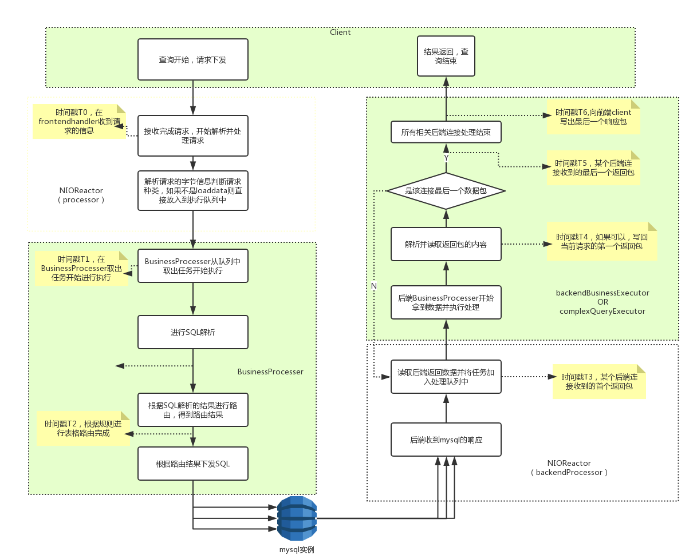

2.20 慢查询日志
类似于MySQL的慢查询日志，可以全局开启并设置，记录dble server运行过程当中的慢查询日志，日志格式兼容MySQL慢查询分析工具(已测试过MySQL官方工具mysqldumpslow和Percona的pt-query-digest)
此外，开启了慢查询日志工具之后，也可以查询某个连接的当前SQL的执行状态，相关命令为：show @@connection.sql.status where FRONT_ID= ?;
2.20.1 在server.xml里增加了6个参数，用于启动时候控制慢查询日志的行为
<!-- 是否开启慢查询日志 -->
<property name="enableSlowLog">0</property>
<!-- 慢查询日志保存文件目录 -->
<!--<property name="slowLogBaseDir">./slowlogs</property>-->
<!-- 慢查询日志保存文件前缀名称 -->
<!--<property name="slowLogBaseName">slow-query</property>-->
<!-- 日志两次刷盘之间的最大周期，单位是秒 -->
<property name="flushSlowLogPeriod">1</property>
<!-- 日志两次刷盘之间内存中的最大条数阈值 -->
<property name="flushSlowLogSize">1000</property>
<!-- 慢查询统计阈值，大于此值会被认为是慢查询 , 单位是毫秒 -->
<property name="sqlSlowTime">100</property>
2.20.2 管理端口增加命令，用于运行过程中动态修改慢查询日志统计行为
enable @@slow_query_log; -- 开启慢查询日志
show @@slow_query_log; -- 查询慢查询日志的开启状态
disable @@slow_query_log; -- 关闭慢查询日志
show @@slow_query_log; -- 再次查询慢查询日志的开启状态
show @@slow_query.time; -- 查看慢查询日志统计阈值
reload @@slow_query.time=200; -- 修改慢查询日志统计阈值
show @@slow_query.flushperiod; -- 查看慢查询日志刷盘周期
reload @@slow_query.flushperiod=2; -- 修改慢查询日志刷盘周期
show @@slow_query.flushsize;-- 查看慢查询日志刷盘条数阈值
reload @@slow_query.flushsize=1100; -- 修改慢查询日志刷盘条数阈值
2.20.3 支持慢查询日志分析工具：MySQL的 mysqldumpslow 工具和Percona 的 pt-query-digest 工具
慢查询日志大概是这样的 :
/FAKE_PATH/mysqld, Version: FAKE_VERSION. started with:
Tcp port: 3320 Unix socket: FAKE_SOCK
Time Id Command Argument
# Time: 2018-08-23T17:40:10.149000Z
# User@Host: root[root] @ [0:0:0:0:0:0:0:1] Id: 2
# Query_time: 0.132709 Lock_time: 0.000000 Rows_sent: 0 Rows_examined: 0 Read_SQL: 0.000350 Prepare_Push: 0.116678 dn1_First_Result_Fetch: 0.013686 dn1_Last_Result_Fetch: 0.001422 Write_Client: 0.001995
SET timestamp=1535017210149;
select * from sharding_two_node where id =1;
# Time: 2018-08-23T17:40:10.200000Z
# User@Host: root[root] @ [0:0:0:0:0:0:0:1] Id: 2
# Query_time: 0.035600 Lock_time: 0.000000 Rows_sent: 0 Rows_examined: 0 Read_SQL: 0.000062 Prepare_Push: 0.006733 dn2_First_Result_Fetch: 0.012524 dn1_First_Result_Fetch: 0.010971 dn2_Last_Result_Fetch: 0.015368 dn1_Last_Result_Fetch: 0.005119 Write_Client: 0.017834
SET timestamp=1535017210200;
select * from sharding_two_node;
# Time: 2018-08-23T17:40:10.282000Z
# User@Host: root[root] @ [0:0:0:0:0:0:0:1] Id: 2
# Query_time: 0.045337 Lock_time: 0.000000 Rows_sent: 0 Rows_examined: 0 Read_SQL: 0.000166 Prepare_Push: 0.003941 dn1_First_Result_Fetch: 0.039652 dn1_Last_Result_Fetch: 0.000300 Write_Client: 0.001578
SET timestamp=1535017210282;
delete from sharding_two_node where id =15;
# Time: 2018-08-23T17:40:10.315000Z
# User@Host: root[root] @ [0:0:0:0:0:0:0:1] Id: 2
# Query_time: 0.031232 Lock_time: 0.000000 Rows_sent: 0 Rows_examined: 0 Read_SQL: 0.005467 Prepare_Push: 0.001989 dn2_First_Result_Fetch: 0.020240 dn2_Last_Result_Fetch: 0.001900 Write_Client: 0.003536
SET timestamp=1535017210315;
delete from sharding_two_node where id =519;
# Time: 2018-08-23T17:40:10.432000Z
# User@Host: root[root] @ [0:0:0:0:0:0:0:1] Id: 2
# Query_time: 0.116672 Lock_time: 0.000000 Rows_sent: 0 Rows_examined: 0 Read_SQL: 0.013625 Prepare_Push: 0.024767 dn2_First_Result_Fetch: 0.056395 dn1_First_Result_Fetch: 0.026420 dn2_Last_Result_Fetch: 0.000743 dn1_Last_Result_Fetch: 0.001700 Write_Client: 0.051861
SET timestamp=1535017210432;
insert into sharding_two_node values(15,'15',15),(519,'519',519);
# Time: 2018-08-23T17:40:10.772000Z
# User@Host: root[root] @ [0:0:0:0:0:0:0:1] Id: 2
# Query_time: 0.338569 Lock_time: 0.000000 Rows_sent: 0 Rows_examined: 0 Read_SQL: 0.000082 Prepare_Push: 0.258365 dn1_0_First_Result_Fetch: 0.047494 dn1_0_Last_Result_Fetch: 0.029018 dn2_0_First_Result_Fetch: 0.042964 dn2_0_Last_Result_Fetch: 0.033525 Write_Client: 0.009385
SET timestamp=1535017210772;
select count(*) from sharding_two_node;
# Time: 2018-08-23T17:40:10.821000Z
# User@Host: root[root] @ [0:0:0:0:0:0:0:1] Id: 2
# Query_time: 0.046745 Lock_time: 0.000000 Rows_sent: 0 Rows_examined: 0 Read_SQL: 0.000059 Prepare_Push: 0.025401 dn1_0_First_Result_Fetch: 0.011755 dn1_0_Last_Result_Fetch: 0.001180 Generate_New_Query: 0.001706 dn1_1_First_Result_Fetch: 0.004224 dn1_1_Last_Result_Fetch: 0.001213 Write_Client: 0.001384
SET timestamp=1535017210821;
select count(*) from sharding_two_node where id =(select id from sharding_two_node where id=1);
# Time: 2018-08-23T17:40:12.061000Z
# User@Host: root[root] @ [0:0:0:0:0:0:0:1] Id: 2
# Query_time: 0.036952 Lock_time: 0.000000 Rows_sent: 0 Rows_examined: 0 Read_SQL: 0.001111 Prepare_Push: 0.001132 dn1_First_Result_Fetch: 0.034266 dn1_Last_Result_Fetch: 0.000084 Write_Client: 0.000443
SET timestamp=1535017212061;
delete from sharding_two_node where id =15;
# Time: 2018-08-23T17:40:12.091000Z
# User@Host: root[root] @ [0:0:0:0:0:0:0:1] Id: 2
# Query_time: 0.028213 Lock_time: 0.000000 Rows_sent: 0 Rows_examined: 0 Read_SQL: 0.000666 Prepare_Push: 0.001206 dn2_First_Result_Fetch: 0.025991 dn2_Last_Result_Fetch: 0.000101 Write_Client: 0.000349
SET timestamp=1535017212091;
delete from sharding_two_node where id =519;
# Time: 2018-08-23T17:40:12.132000Z
# User@Host: root[root] @ [0:0:0:0:0:0:0:1] Id: 2
# Query_time: 0.040365 Lock_time: 0.000000 Rows_sent: 0 Rows_examined: 0 Read_SQL: 0.000223 Prepare_Push: 0.001172 dn2_First_Result_Fetch: 0.019852 dn1_First_Result_Fetch: 0.019810 dn2_Last_Result_Fetch: 0.000901 dn1_Last_Result_Fetch: 0.000780 Write_Client: 0.019160
SET timestamp=1535017212132;
insert into sharding_two_node values(15,'15',15),(519,'519',519);
# Time: 2018-08-23T17:40:12.145000Z
# User@Host: root[root] @ [0:0:0:0:0:0:0:1] Id: 2
# Query_time: 0.012196 Lock_time: 0.000000 Rows_sent: 0 Rows_examined: 0 Read_SQL: 0.000115 Prepare_Push: 0.001403 dn1_0_First_Result_Fetch: 0.006714 dn1_0_Last_Result_Fetch: 0.002561 dn2_0_First_Result_Fetch: 0.006787 dn2_0_Last_Result_Fetch: 0.001806 Write_Client: 0.002280
SET timestamp=1535017212145;
select count(*) from sharding_two_node;
# Time: 2018-08-23T17:40:12.164000Z
# User@Host: root[root] @ [0:0:0:0:0:0:0:1] Id: 2
# Query_time: 0.016979 Lock_time: 0.000000 Rows_sent: 0 Rows_examined: 0 Read_SQL: 0.000224 Prepare_Push: 0.002236 dn1_0_First_Result_Fetch: 0.006678 dn1_0_Last_Result_Fetch: 0.000703 Generate_New_Query: 0.000866 dn1_1_First_Result_Fetch: 0.004532 dn1_1_Last_Result_Fetch: 0.000879 Write_Client: 0.001002
SET timestamp=1535017212164;
select count(*) from sharding_two_node where id =(select id from sharding_two_node where id=1);
# Time: 2018-08-23T17:40:13.134000Z
# User@Host: root[root] @ [0:0:0:0:0:0:0:1] Id: 2
# Query_time: 0.010213 Lock_time: 0.000000 Rows_sent: 0 Rows_examined: 0 Read_SQL: 0.000145 Prepare_Push: 0.001520 dn1_First_Result_Fetch: 0.007996 dn1_Last_Result_Fetch: 0.000201 Write_Client: 0.000551
SET timestamp=1535017213134;
select * from sharding_two_node where id =1;
# Time: 2018-08-23T17:40:13.153000Z
# User@Host: root[root] @ [0:0:0:0:0:0:0:1] Id: 2
# Query_time: 0.014257 Lock_time: 0.000000 Rows_sent: 0 Rows_examined: 0 Read_SQL: 0.000080 Prepare_Push: 0.002394 dn2_First_Result_Fetch: 0.008839 dn1_First_Result_Fetch: 0.008837 dn2_Last_Result_Fetch: 0.001424 dn1_Last_Result_Fetch: 0.002407 Write_Client: 0.002945
SET timestamp=1535017213153;
select * from sharding_two_node;
# Time: 2018-08-23T17:40:13.212000Z
# User@Host: root[root] @ [0:0:0:0:0:0:0:1] Id: 2
# Query_time: 0.029822 Lock_time: 0.000000 Rows_sent: 0 Rows_examined: 0 Read_SQL: 0.000063 Prepare_Push: 0.001128 dn1_First_Result_Fetch: 0.028277 dn1_Last_Result_Fetch: 0.000109 Write_Client: 0.000355
SET timestamp=1535017213212;
delete from sharding_two_node where id =15;
# Time: 2018-08-23T17:40:13.240000Z
# User@Host: root[root] @ [0:0:0:0:0:0:0:1] Id: 2
# Query_time: 0.027695 Lock_time: 0.000000 Rows_sent: 0 Rows_examined: 0 Read_SQL: 0.000067 Prepare_Push: 0.000682 dn2_First_Result_Fetch: 0.026582 dn2_Last_Result_Fetch: 0.000078 Write_Client: 0.000364
SET timestamp=1535017213240;
delete from sharding_two_node where id =519;
# Time: 2018-08-23T17:40:13.321000Z
# User@Host: root[root] @ [0:0:0:0:0:0:0:1] Id: 2
# Query_time: 0.076093 Lock_time: 0.000000 Rows_sent: 0 Rows_examined: 0 Read_SQL: 0.000231 Prepare_Push: 0.001334 dn2_First_Result_Fetch: 0.035072 dn1_First_Result_Fetch: 0.035074 dn2_Last_Result_Fetch: 0.018756 dn1_Last_Result_Fetch: 0.001263 Write_Client: 0.039457
SET timestamp=1535017213321;
insert into sharding_two_node values(15,'15',15),(519,'519',519);
# Time: 2018-08-23T17:40:13.348000Z
# User@Host: root[root] @ [0:0:0:0:0:0:0:1] Id: 2
# Query_time: 0.026278 Lock_time: 0.000000 Rows_sent: 0 Rows_examined: 0 Read_SQL: 0.000335 Prepare_Push: 0.001249 dn1_0_First_Result_Fetch: 0.011028 dn1_0_Last_Result_Fetch: 0.009279 dn2_0_First_Result_Fetch: 0.019200 dn2_0_Last_Result_Fetch: 0.003441 Write_Client: 0.004600
SET timestamp=1535017213348;
select count(*) from sharding_two_node;
# Time: 2018-08-23T17:40:13.381000Z
# User@Host: root[root] @ [0:0:0:0:0:0:0:1] Id: 2
# Query_time: 0.029152 Lock_time: 0.000000 Rows_sent: 0 Rows_examined: 0 Read_SQL: 0.000662 Prepare_Push: 0.003189 dn1_0_First_Result_Fetch: 0.014453 dn1_0_Last_Result_Fetch: 0.001013 Generate_New_Query: 0.000911 dn1_1_First_Result_Fetch: 0.005703 dn1_1_Last_Result_Fetch: 0.001483 Write_Client: 0.002114
SET timestamp=1535017213381;
select count(*) from sharding_two_node where id =(select id from sharding_two_node where id=1);
# Time: 2018-08-23T17:40:14.163000Z
# User@Host: root[root] @ [0:0:0:0:0:0:0:1] Id: 2
# Query_time: 0.012540 Lock_time: 0.000000 Rows_sent: 0 Rows_examined: 0 Read_SQL: 0.000197 Prepare_Push: 0.001303 dn2_First_Result_Fetch: 0.006452 dn1_First_Result_Fetch: 0.007858 dn2_Last_Result_Fetch: 0.004065 dn1_Last_Result_Fetch: 0.002960 Write_Client: 0.004588
SET timestamp=1535017214163;
select * from sharding_two_node;
# Time: 2018-08-23T17:40:14.220000Z
# User@Host: root[root] @ [0:0:0:0:0:0:0:1] Id: 2
# Query_time: 0.027587 Lock_time: 0.000000 Rows_sent: 0 Rows_examined: 0 Read_SQL: 0.000051 Prepare_Push: 0.000744 dn1_First_Result_Fetch: 0.026441 dn1_Last_Result_Fetch: 0.000104 Write_Client: 0.000350
SET timestamp=1535017214220;
delete from sharding_two_node where id =15;
# Time: 2018-08-23T17:40:14.253000Z
# User@Host: root[root] @ [0:0:0:0:0:0:0:1] Id: 2
# Query_time: 0.031984 Lock_time: 0.000000 Rows_sent: 0 Rows_examined: 0 Read_SQL: 0.000070 Prepare_Push: 0.001144 dn2_First_Result_Fetch: 0.030202 dn2_Last_Result_Fetch: 0.000182 Write_Client: 0.000568
SET timestamp=1535017214253;
delete from sharding_two_node where id =519;
# Time: 2018-08-23T17:40:14.292000Z
# User@Host: root[root] @ [0:0:0:0:0:0:0:1] Id: 2
# Query_time: 0.037327 Lock_time: 0.000000 Rows_sent: 0 Rows_examined: 0 Read_SQL: 0.000272 Prepare_Push: 0.001316 dn2_First_Result_Fetch: 0.014299 dn1_First_Result_Fetch: 0.014331 dn2_Last_Result_Fetch: 0.001148 dn1_Last_Result_Fetch: 0.000753 Write_Client: 0.021440
SET timestamp=1535017214292;
insert into sharding_two_node values(15,'15',15),(519,'519',519);
# Time: 2018-08-23T17:40:14.303000Z
# User@Host: root[root] @ [0:0:0:0:0:0:0:1] Id: 2
# Query_time: 0.010244 Lock_time: 0.000000 Rows_sent: 0 Rows_examined: 0 Read_SQL: 0.000050 Prepare_Push: 0.001101 dn1_0_First_Result_Fetch: 0.004540 dn1_0_Last_Result_Fetch: 0.002781 dn2_0_First_Result_Fetch: 0.004708 dn2_0_Last_Result_Fetch: 0.002592 Write_Client: 0.002092
SET timestamp=1535017214303;
select count(*) from sharding_two_node;
# Time: 2018-08-23T17:40:14.327000Z
# User@Host: root[root] @ [0:0:0:0:0:0:0:1] Id: 2
# Query_time: 0.021078 Lock_time: 0.000000 Rows_sent: 0 Rows_examined: 0 Read_SQL: 0.000109 Prepare_Push: 0.002098 dn1_0_First_Result_Fetch: 0.006720 dn1_0_Last_Result_Fetch: 0.000748 Generate_New_Query: 0.001158 dn1_1_First_Result_Fetch: 0.008043 dn1_1_Last_Result_Fetch: 0.001147 Write_Client: 0.001269
SET timestamp=1535017214327;
select count(*) from sharding_two_node where id =(select id from sharding_two_node where id=1);
# Time: 2018-08-23T17:40:15.254000Z
# User@Host: root[root] @ [0:0:0:0:0:0:0:1] Id: 2
# Query_time: 0.010569 Lock_time: 0.000000 Rows_sent: 0 Rows_examined: 0 Read_SQL: 0.000076 Prepare_Push: 0.001050 dn1_First_Result_Fetch: 0.008330 dn1_Last_Result_Fetch: 0.000146 Write_Client: 0.001113
SET timestamp=1535017215254;
select * from sharding_two_node where id =1;
# Time: 2018-08-23T17:40:15.321000Z
# User@Host: root[root] @ [0:0:0:0:0:0:0:1] Id: 2
# Query_time: 0.024216 Lock_time: 0.000000 Rows_sent: 0 Rows_examined: 0 Read_SQL: 0.000081 Prepare_Push: 0.001295 dn1_First_Result_Fetch: 0.021938 dn1_Last_Result_Fetch: 0.000422 Write_Client: 0.000902
SET timestamp=1535017215321;
delete from sharding_two_node where id =15;
# Time: 2018-08-23T17:40:15.351000Z
# User@Host: root[root] @ [0:0:0:0:0:0:0:1] Id: 2
# Query_time: 0.027796 Lock_time: 0.000000 Rows_sent: 0 Rows_examined: 0 Read_SQL: 0.000666 Prepare_Push: 0.000760 dn2_First_Result_Fetch: 0.025984 dn2_Last_Result_Fetch: 0.000094 Write_Client: 0.000386
SET timestamp=1535017215351;
delete from sharding_two_node where id =519;
# Time: 2018-08-23T17:40:15.392000Z
# User@Host: root[root] @ [0:0:0:0:0:0:0:1] Id: 2
# Query_time: 0.039805 Lock_time: 0.000000 Rows_sent: 0 Rows_examined: 0 Read_SQL: 0.000217 Prepare_Push: 0.000804 dn2_First_Result_Fetch: 0.017410 dn1_First_Result_Fetch: 0.017468 dn2_Last_Result_Fetch: 0.001490 dn1_Last_Result_Fetch: 0.001223 Write_Client: 0.021374
SET timestamp=1535017215392;
insert into sharding_two_node values(15,'15',15),(519,'519',519);
# Time: 2018-08-23T17:40:15.410000Z
# User@Host: root[root] @ [0:0:0:0:0:0:0:1] Id: 2
# Query_time: 0.017384 Lock_time: 0.000000 Rows_sent: 0 Rows_examined: 0 Read_SQL: 0.000152 Prepare_Push: 0.001183 dn1_0_First_Result_Fetch: 0.005037 dn1_0_Last_Result_Fetch: 0.007164 dn2_0_First_Result_Fetch: 0.008156 dn2_0_Last_Result_Fetch: 0.004962 Write_Client: 0.004043
SET timestamp=1535017215410;
select count(*) from sharding_two_node;
# Time: 2018-08-23T17:40:15.434000Z
# User@Host: root[root] @ [0:0:0:0:0:0:0:1] Id: 2
# Query_time: 0.021341 Lock_time: 0.000000 Rows_sent: 0 Rows_examined: 0 Read_SQL: 0.000318 Prepare_Push: 0.002764 dn1_0_First_Result_Fetch: 0.010897 dn1_0_Last_Result_Fetch: 0.000544 Generate_New_Query: 0.000798 dn1_1_First_Result_Fetch: 0.004506 dn1_1_Last_Result_Fetch: 0.000790 Write_Client: 0.000845
SET timestamp=1535017215434;
select count(*) from sharding_two_node where id =(select id from sharding_two_node where id=1);
# Time: 2018-08-23T17:40:16.322000Z
# User@Host: root[root] @ [0:0:0:0:0:0:0:1] Id: 2
# Query_time: 0.030106 Lock_time: 0.000000 Rows_sent: 0 Rows_examined: 0 Read_SQL: 0.000217 Prepare_Push: 0.001253 dn1_First_Result_Fetch: 0.028330 dn1_Last_Result_Fetch: 0.000086 Write_Client: 0.000306
SET timestamp=1535017216322;
delete from sharding_two_node where id =15;
# Time: 2018-08-23T17:40:16.353000Z
# User@Host: root[root] @ [0:0:0:0:0:0:0:1] Id: 2
# Query_time: 0.030005 Lock_time: 0.000000 Rows_sent: 0 Rows_examined: 0 Read_SQL: 0.001306 Prepare_Push: 0.001004 dn2_First_Result_Fetch: 0.027242 dn2_Last_Result_Fetch: 0.000140 Write_Client: 0.000453
SET timestamp=1535017216353;
delete from sharding_two_node where id =519;
# Time: 2018-08-23T17:40:16.403000Z
# User@Host: root[root] @ [0:0:0:0:0:0:0:1] Id: 2
# Query_time: 0.049615 Lock_time: 0.000000 Rows_sent: 0 Rows_examined: 0 Read_SQL: 0.001459 Prepare_Push: 0.000830 dn2_First_Result_Fetch: 0.024286 dn1_First_Result_Fetch: 0.025469 dn2_Last_Result_Fetch: 0.001726 dn1_Last_Result_Fetch: 0.000853 Write_Client: 0.023039
SET timestamp=1535017216403;
insert into sharding_two_node values(15,'15',15),(519,'519',519);
# Time: 2018-08-23T17:40:16.526000Z
# User@Host: root[root] @ [0:0:0:0:0:0:0:1] Id: 2
# Query_time: 0.121702 Lock_time: 0.000000 Rows_sent: 0 Rows_examined: 0 Read_SQL: 0.000337 Prepare_Push: 0.000889 dn1_0_First_Result_Fetch: 0.009370 dn1_0_Last_Result_Fetch: 0.002010 dn2_0_First_Result_Fetch: 0.009160 dn2_0_Last_Result_Fetch: 0.001779 Write_Client: 0.109753
SET timestamp=1535017216526;
select count(*) from sharding_two_node;
# Time: 2018-08-23T17:40:16.560000Z
# User@Host: root[root] @ [0:0:0:0:0:0:0:1] Id: 2
# Query_time: 0.030306 Lock_time: 0.000000 Rows_sent: 0 Rows_examined: 0 Read_SQL: 0.001534 Prepare_Push: 0.001759 dn1_0_First_Result_Fetch: 0.011846 dn1_0_Last_Result_Fetch: 0.001663 Generate_New_Query: 0.003223 dn1_1_First_Result_Fetch: 0.006428 dn1_1_Last_Result_Fetch: 0.002601 Write_Client: 0.002291
SET timestamp=1535017216560;
select count(*) from sharding_two_node where id =(select id from sharding_two_node where id=1);
# Time: 2018-08-23T17:40:17.325000Z
# User@Host: root[root] @ [0:0:0:0:0:0:0:1] Id: 2
# Query_time: 0.017545 Lock_time: 0.000000 Rows_sent: 0 Rows_examined: 0 Read_SQL: 0.006231 Prepare_Push: 0.002335 dn1_First_Result_Fetch: 0.008121 dn1_Last_Result_Fetch: 0.000277 Write_Client: 0.000857
SET timestamp=1535017217325;
select * from sharding_two_node where id =1;
# Time: 2018-08-23T17:40:17.390000Z
# User@Host: root[root] @ [0:0:0:0:0:0:0:1] Id: 2
# Query_time: 0.026216 Lock_time: 0.000000 Rows_sent: 0 Rows_examined: 0 Read_SQL: 0.000854 Prepare_Push: 0.000904 dn1_First_Result_Fetch: 0.024157 dn1_Last_Result_Fetch: 0.000081 Write_Client: 0.000301
SET timestamp=1535017217390;
delete from sharding_two_node where id =15;
# Time: 2018-08-23T17:40:17.411000Z
# User@Host: root[root] @ [0:0:0:0:0:0:0:1] Id: 2
# Query_time: 0.020095 Lock_time: 0.000000 Rows_sent: 0 Rows_examined: 0 Read_SQL: 0.000699 Prepare_Push: 0.000711 dn2_First_Result_Fetch: 0.017634 dn2_Last_Result_Fetch: 0.000132 Write_Client: 0.001051
SET timestamp=1535017217411;
delete from sharding_two_node where id =519;
# Time: 2018-08-23T17:40:17.491000Z
# User@Host: root[root] @ [0:0:0:0:0:0:0:1] Id: 2
# Query_time: 0.078505 Lock_time: 0.000000 Rows_sent: 0 Rows_examined: 0 Read_SQL: 0.001702 Prepare_Push: 0.000763 dn2_First_Result_Fetch: 0.018547 dn1_First_Result_Fetch: 0.018482 dn2_Last_Result_Fetch: 0.036637 dn1_Last_Result_Fetch: 0.000566 Write_Client: 0.057558
SET timestamp=1535017217491;
insert into sharding_two_node values(15,'15',15),(519,'519',519);
# Time: 2018-08-23T17:40:17.518000Z
# User@Host: root[root] @ [0:0:0:0:0:0:0:1] Id: 2
# Query_time: 0.026112 Lock_time: 0.000000 Rows_sent: 0 Rows_examined: 0 Read_SQL: 0.000686 Prepare_Push: 0.000872 dn1_0_First_Result_Fetch: 0.007054 dn1_0_Last_Result_Fetch: 0.001072 dn2_0_First_Result_Fetch: 0.005839 dn2_0_Last_Result_Fetch: 0.017248 Write_Client: 0.016586
SET timestamp=1535017217518;
select count(*) from sharding_two_node;
# Time: 2018-08-23T17:40:17.558000Z
# User@Host: root[root] @ [0:0:0:0:0:0:0:1] Id: 2
# Query_time: 0.038199 Lock_time: 0.000000 Rows_sent: 0 Rows_examined: 0 Read_SQL: 0.000966 Prepare_Push: 0.005189 dn1_0_First_Result_Fetch: 0.013137 dn1_0_Last_Result_Fetch: 0.001134 Generate_New_Query: 0.003973 dn1_1_First_Result_Fetch: 0.010228 dn1_1_Last_Result_Fetch: 0.003564 Write_Client: 0.002115
SET timestamp=1535017217558;
select count(*) from sharding_two_node where id =(select id from sharding_two_node where id=1);
# Time: 2018-08-23T17:40:18.353000Z
# User@Host: root[root] @ [0:0:0:0:0:0:0:1] Id: 2
# Query_time: 0.019048 Lock_time: 0.000000 Rows_sent: 0 Rows_examined: 0 Read_SQL: 0.003008 Prepare_Push: 0.000844 dn2_First_Result_Fetch: 0.006415 dn1_First_Result_Fetch: 0.009082 dn2_Last_Result_Fetch: 0.000323 dn1_Last_Result_Fetch: 0.005902 Write_Client: 0.008781
SET timestamp=1535017218353;
select * from sharding_two_node;
# Time: 2018-08-23T17:40:18.410000Z
# User@Host: root[root] @ [0:0:0:0:0:0:0:1] Id: 2
# Query_time: 0.025498 Lock_time: 0.000000 Rows_sent: 0 Rows_examined: 0 Read_SQL: 0.000060 Prepare_Push: 0.000696 dn1_First_Result_Fetch: 0.024394 dn1_Last_Result_Fetch: 0.000084 Write_Client: 0.000348
SET timestamp=1535017218410;
delete from sharding_two_node where id =15;
# Time: 2018-08-23T17:40:18.430000Z
# User@Host: root[root] @ [0:0:0:0:0:0:0:1] Id: 2
# Query_time: 0.018794 Lock_time: 0.000000 Rows_sent: 0 Rows_examined: 0 Read_SQL: 0.000047 Prepare_Push: 0.001301 dn2_First_Result_Fetch: 0.017073 dn2_Last_Result_Fetch: 0.000099 Write_Client: 0.000373
SET timestamp=1535017218430;
delete from sharding_two_node where id =519;
# Time: 2018-08-23T17:40:18.471000Z
# User@Host: root[root] @ [0:0:0:0:0:0:0:1] Id: 2
# Query_time: 0.039810 Lock_time: 0.000000 Rows_sent: 0 Rows_examined: 0 Read_SQL: 0.000052 Prepare_Push: 0.000661 dn2_First_Result_Fetch: 0.019799 dn1_First_Result_Fetch: 0.019923 dn2_Last_Result_Fetch: 0.000698 dn1_Last_Result_Fetch: 0.000814 Write_Client: 0.019298
SET timestamp=1535017218471;
insert into sharding_two_node values(15,'15',15),(519,'519',519);
# Time: 2018-08-23T17:40:18.484000Z
# User@Host: root[root] @ [0:0:0:0:0:0:0:1] Id: 2
# Query_time: 0.012214 Lock_time: 0.000000 Rows_sent: 0 Rows_examined: 0 Read_SQL: 0.000047 Prepare_Push: 0.001782 dn1_0_First_Result_Fetch: 0.007109 dn1_0_Last_Result_Fetch: 0.001544 dn2_0_First_Result_Fetch: 0.005518 dn2_0_Last_Result_Fetch: 0.001470 Write_Client: 0.003568
SET timestamp=1535017218484;
select count(*) from sharding_two_node;
# Time: 2018-08-23T17:40:18.507000Z
# User@Host: root[root] @ [0:0:0:0:0:0:0:1] Id: 2
# Query_time: 0.019695 Lock_time: 0.000000 Rows_sent: 0 Rows_examined: 0 Read_SQL: 0.000046 Prepare_Push: 0.001448 dn1_0_First_Result_Fetch: 0.006244 dn1_0_Last_Result_Fetch: 0.000988 Generate_New_Query: 0.001564 dn1_1_First_Result_Fetch: 0.007080 dn1_1_Last_Result_Fetch: 0.001306 Write_Client: 0.001137
SET timestamp=1535017218507;
select count(*) from sharding_two_node where id =(select id from sharding_two_node where id=1);
# Time: 2018-08-23T17:40:19.351000Z
# User@Host: root[root] @ [0:0:0:0:0:0:0:1] Id: 2
# Query_time: 0.020937 Lock_time: 0.000000 Rows_sent: 0 Rows_examined: 0 Read_SQL: 0.000059 Prepare_Push: 0.000800 dn1_First_Result_Fetch: 0.019607 dn1_Last_Result_Fetch: 0.000169 Write_Client: 0.000472
SET timestamp=1535017219351;
delete from sharding_two_node where id =15;
# Time: 2018-08-23T17:40:19.370000Z
# User@Host: root[root] @ [0:0:0:0:0:0:0:1] Id: 2
# Query_time: 0.018011 Lock_time: 0.000000 Rows_sent: 0 Rows_examined: 0 Read_SQL: 0.001184 Prepare_Push: 0.000583 dn2_First_Result_Fetch: 0.015894 dn2_Last_Result_Fetch: 0.000129 Write_Client: 0.000351
SET timestamp=1535017219370;
delete from sharding_two_node where id =519;
# Time: 2018-08-23T17:40:19.412000Z
# User@Host: root[root] @ [0:0:0:0:0:0:0:1] Id: 2
# Query_time: 0.041319 Lock_time: 0.000000 Rows_sent: 0 Rows_examined: 0 Read_SQL: 0.000689 Prepare_Push: 0.000573 dn2_First_Result_Fetch: 0.017735 dn1_First_Result_Fetch: 0.017876 dn2_Last_Result_Fetch: 0.000601 dn1_Last_Result_Fetch: 0.000806 Write_Client: 0.022322
SET timestamp=1535017219412;
insert into sharding_two_node values(15,'15',15),(519,'519',519);
# Time: 2018-08-23T17:40:19.423000Z
# User@Host: root[root] @ [0:0:0:0:0:0:0:1] Id: 2
# Query_time: 0.010063 Lock_time: 0.000000 Rows_sent: 0 Rows_examined: 0 Read_SQL: 0.000200 Prepare_Push: 0.001136 dn1_0_First_Result_Fetch: 0.006820 dn1_0_Last_Result_Fetch: 0.000694 dn2_0_First_Result_Fetch: 0.003519 dn2_0_Last_Result_Fetch: 0.003944 Write_Client: 0.001443
SET timestamp=1535017219423;
select count(*) from sharding_two_node;
# Time: 2018-08-23T17:40:19.454000Z
# User@Host: root[root] @ [0:0:0:0:0:0:0:1] Id: 2
# Query_time: 0.027592 Lock_time: 0.000000 Rows_sent: 0 Rows_examined: 0 Read_SQL: 0.000182 Prepare_Push: 0.012798 dn1_0_First_Result_Fetch: 0.005960 dn1_0_Last_Result_Fetch: 0.000530 Generate_New_Query: 0.000811 dn1_1_First_Result_Fetch: 0.005659 dn1_1_Last_Result_Fetch: 0.000926 Write_Client: 0.001101
SET timestamp=1535017219454;
select count(*) from sharding_two_node where id =(select id from sharding_two_node where id=1);
# Time: 2018-08-23T17:40:20.312000Z
# User@Host: root[root] @ [0:0:0:0:0:0:0:1] Id: 2
# Query_time: 0.025903 Lock_time: 0.000000 Rows_sent: 0 Rows_examined: 0 Read_SQL: 0.001470 Prepare_Push: 0.000887 dn1_First_Result_Fetch: 0.022114 dn1_Last_Result_Fetch: 0.000197 Write_Client: 0.001433
SET timestamp=1535017220312;
delete from sharding_two_node where id =15;
# Time: 2018-08-23T17:40:20.342000Z
# User@Host: root[root] @ [0:0:0:0:0:0:0:1] Id: 2
# Query_time: 0.028503 Lock_time: 0.000000 Rows_sent: 0 Rows_examined: 0 Read_SQL: 0.005643 Prepare_Push: 0.001172 dn2_First_Result_Fetch: 0.021342 dn2_Last_Result_Fetch: 0.000074 Write_Client: 0.000346
SET timestamp=1535017220342;
delete from sharding_two_node where id =519;
# Time: 2018-08-23T17:40:20.381000Z
# User@Host: root[root] @ [0:0:0:0:0:0:0:1] Id: 2
# Query_time: 0.037424 Lock_time: 0.000000 Rows_sent: 0 Rows_examined: 0 Read_SQL: 0.000641 Prepare_Push: 0.000959 dn2_First_Result_Fetch: 0.015139 dn1_First_Result_Fetch: 0.015238 dn2_Last_Result_Fetch: 0.000795 dn1_Last_Result_Fetch: 0.000956 Write_Client: 0.020685
SET timestamp=1535017220381;
insert into sharding_two_node values(15,'15',15),(519,'519',519);
# Time: 2018-08-23T17:40:20.408000Z
# User@Host: root[root] @ [0:0:0:0:0:0:0:1] Id: 2
# Query_time: 0.016143 Lock_time: 0.000000 Rows_sent: 0 Rows_examined: 0 Read_SQL: 0.000122 Prepare_Push: 0.001979 dn1_0_First_Result_Fetch: 0.004408 dn1_0_Last_Result_Fetch: 0.000484 Generate_New_Query: 0.000965 dn1_1_First_Result_Fetch: 0.006059 dn1_1_Last_Result_Fetch: 0.001553 Write_Client: 0.000755
SET timestamp=1535017220408;
select count(*) from sharding_two_node where id =(select id from sharding_two_node where id=1);
# Time: 2018-08-23T17:40:21.214000Z
# User@Host: root[root] @ [0:0:0:0:0:0:0:1] Id: 2
# Query_time: 0.023376 Lock_time: 0.000000 Rows_sent: 0 Rows_examined: 0 Read_SQL: 0.000073 Prepare_Push: 0.001306 dn1_First_Result_Fetch: 0.021694 dn1_Last_Result_Fetch: 0.000081 Write_Client: 0.000302
SET timestamp=1535017221214;
delete from sharding_two_node where id =15;
# Time: 2018-08-23T17:40:21.241000Z
# User@Host: root[root] @ [0:0:0:0:0:0:0:1] Id: 2
# Query_time: 0.025408 Lock_time: 0.000000 Rows_sent: 0 Rows_examined: 0 Read_SQL: 0.000083 Prepare_Push: 0.001029 dn2_First_Result_Fetch: 0.023856 dn2_Last_Result_Fetch: 0.000122 Write_Client: 0.000440
SET timestamp=1535017221241;
delete from sharding_two_node where id =519;
# Time: 2018-08-23T17:40:21.281000Z
# User@Host: root[root] @ [0:0:0:0:0:0:0:1] Id: 2
# Query_time: 0.038482 Lock_time: 0.000000 Rows_sent: 0 Rows_examined: 0 Read_SQL: 0.000087 Prepare_Push: 0.000871 dn2_First_Result_Fetch: 0.016690 dn1_First_Result_Fetch: 0.016708 dn2_Last_Result_Fetch: 0.000579 dn1_Last_Result_Fetch: 0.000891 Write_Client: 0.020835
SET timestamp=1535017221281;
insert into sharding_two_node values(15,'15',15),(519,'519',519);
# Time: 2018-08-23T17:40:21.293000Z
# User@Host: root[root] @ [0:0:0:0:0:0:0:1] Id: 2
# Query_time: 0.011657 Lock_time: 0.000000 Rows_sent: 0 Rows_examined: 0 Read_SQL: 0.000615 Prepare_Push: 0.001320 dn1_0_First_Result_Fetch: 0.006906 dn1_0_Last_Result_Fetch: 0.001589 dn2_0_First_Result_Fetch: 0.005105 dn2_0_Last_Result_Fetch: 0.001548 Write_Client: 0.003341
SET timestamp=1535017221293;
select count(*) from sharding_two_node;
# Time: 2018-08-23T17:40:21.312000Z
# User@Host: root[root] @ [0:0:0:0:0:0:0:1] Id: 2
# Query_time: 0.017169 Lock_time: 0.000000 Rows_sent: 0 Rows_examined: 0 Read_SQL: 0.000635 Prepare_Push: 0.001609 dn1_0_First_Result_Fetch: 0.006997 dn1_0_Last_Result_Fetch: 0.000728 Generate_New_Query: 0.001037 dn1_1_First_Result_Fetch: 0.004816 dn1_1_Last_Result_Fetch: 0.000709 Write_Client: 0.000703
SET timestamp=1535017221312;
select count(*) from sharding_two_node where id =(select id from sharding_two_node where id=1);
# Time: 2018-08-23T17:40:22.150000Z
# User@Host: root[root] @ [0:0:0:0:0:0:0:1] Id: 2
# Query_time: 0.026153 Lock_time: 0.000000 Rows_sent: 0 Rows_examined: 0 Read_SQL: 0.000180 Prepare_Push: 0.000771 dn1_First_Result_Fetch: 0.024940 dn1_Last_Result_Fetch: 0.000061 Write_Client: 0.000261
SET timestamp=1535017222150;
delete from sharding_two_node where id =15;
# Time: 2018-08-23T17:40:22.170000Z
# User@Host: root[root] @ [0:0:0:0:0:0:0:1] Id: 2
# Query_time: 0.019181 Lock_time: 0.000000 Rows_sent: 0 Rows_examined: 0 Read_SQL: 0.000180 Prepare_Push: 0.000642 dn2_First_Result_Fetch: 0.018060 dn2_Last_Result_Fetch: 0.000088 Write_Client: 0.000299
SET timestamp=1535017222170;
delete from sharding_two_node where id =519;
# Time: 2018-08-23T17:40:22.220000Z
# User@Host: root[root] @ [0:0:0:0:0:0:0:1] Id: 2
# Query_time: 0.049834 Lock_time: 0.000000 Rows_sent: 0 Rows_examined: 0 Read_SQL: 0.000261 Prepare_Push: 0.000735 dn2_First_Result_Fetch: 0.019862 dn1_First_Result_Fetch: 0.019807 dn2_Last_Result_Fetch: 0.000418 dn1_Last_Result_Fetch: 0.000655 Write_Client: 0.029031
SET timestamp=1535017222220;
insert into sharding_two_node values(15,'15',15),(519,'519',519);
# Time: 2018-08-23T17:40:22.240000Z
# User@Host: root[root] @ [0:0:0:0:0:0:0:1] Id: 2
# Query_time: 0.019128 Lock_time: 0.000000 Rows_sent: 0 Rows_examined: 0 Read_SQL: 0.000934 Prepare_Push: 0.002731 dn1_0_First_Result_Fetch: 0.013430 dn1_0_Last_Result_Fetch: 0.000521 dn2_0_First_Result_Fetch: 0.003296 dn2_0_Last_Result_Fetch: 0.001243 Write_Client: 0.011072
SET timestamp=1535017222240;
select count(*) from sharding_two_node;
# Time: 2018-08-23T17:40:22.270000Z
# User@Host: root[root] @ [0:0:0:0:0:0:0:1] Id: 2
# Query_time: 0.028479 Lock_time: 0.000000 Rows_sent: 0 Rows_examined: 0 Read_SQL: 0.003233 Prepare_Push: 0.004986 dn1_0_First_Result_Fetch: 0.009870 dn1_0_Last_Result_Fetch: 0.001172 Generate_New_Query: 0.001590 dn1_1_First_Result_Fetch: 0.006060 dn1_1_Last_Result_Fetch: 0.000771 Write_Client: 0.000700
SET timestamp=1535017222270;
select count(*) from sharding_two_node where id =(select id from sharding_two_node where id=1);
# Time: 2018-08-23T17:40:23.097000Z
# User@Host: root[root] @ [0:0:0:0:0:0:0:1] Id: 2
# Query_time: 0.053956 Lock_time: 0.000000 Rows_sent: 0 Rows_examined: 0 Read_SQL: 0.000056 Prepare_Push: 0.001034 dn1_First_Result_Fetch: 0.052343 dn1_Last_Result_Fetch: 0.000174 Write_Client: 0.000523
SET timestamp=1535017223097;
select * from sharding_two_node where id =1;
# Time: 2018-08-23T17:40:23.110000Z
# User@Host: root[root] @ [0:0:0:0:0:0:0:1] Id: 2
# Query_time: 0.010839 Lock_time: 0.000000 Rows_sent: 0 Rows_examined: 0 Read_SQL: 0.000499 Prepare_Push: 0.000680 dn2_First_Result_Fetch: 0.006349 dn1_First_Result_Fetch: 0.009082 dn2_Last_Result_Fetch: 0.000270 dn1_Last_Result_Fetch: 0.000333 Write_Client: 0.003311
SET timestamp=1535017223110;
select * from sharding_two_node;
# Time: 2018-08-23T17:40:23.181000Z
# User@Host: root[root] @ [0:0:0:0:0:0:0:1] Id: 2
# Query_time: 0.027573 Lock_time: 0.000000 Rows_sent: 0 Rows_examined: 0 Read_SQL: 0.000109 Prepare_Push: 0.000980 dn2_First_Result_Fetch: 0.026156 dn2_Last_Result_Fetch: 0.000086 Write_Client: 0.000328
SET timestamp=1535017223181;
delete from sharding_two_node where id =519;
# Time: 2018-08-23T17:40:23.231000Z
# User@Host: root[root] @ [0:0:0:0:0:0:0:1] Id: 2
# Query_time: 0.049380 Lock_time: 0.000000 Rows_sent: 0 Rows_examined: 0 Read_SQL: 0.002435 Prepare_Push: 0.000670 dn2_First_Result_Fetch: 0.025278 dn1_First_Result_Fetch: 0.025242 dn2_Last_Result_Fetch: 0.000392 dn1_Last_Result_Fetch: 0.000629 Write_Client: 0.021032
SET timestamp=1535017223231;
insert into sharding_two_node values(15,'15',15),(519,'519',519);
# Time: 2018-08-23T17:40:23.268000Z
# User@Host: root[root] @ [0:0:0:0:0:0:0:1] Id: 2
# Query_time: 0.025207 Lock_time: 0.000000 Rows_sent: 0 Rows_examined: 0 Read_SQL: 0.000060 Prepare_Push: 0.001492 dn1_0_First_Result_Fetch: 0.007693 dn1_0_Last_Result_Fetch: 0.000752 Generate_New_Query: 0.001946 dn1_1_First_Result_Fetch: 0.008776 dn1_1_Last_Result_Fetch: 0.005040 Write_Client: 0.001884
SET timestamp=1535017223268;
select count(*) from sharding_two_node where id =(select id from sharding_two_node where id=1);
# Time: 2018-08-23T17:40:24.121000Z
# User@Host: root[root] @ [0:0:0:0:0:0:0:1] Id: 2
# Query_time: 0.027104 Lock_time: 0.000000 Rows_sent: 0 Rows_examined: 0 Read_SQL: 0.001558 Prepare_Push: 0.001107 dn1_First_Result_Fetch: 0.024084 dn1_Last_Result_Fetch: 0.000085 Write_Client: 0.000356
SET timestamp=1535017224121;
delete from sharding_two_node where id =15;
# Time: 2018-08-23T17:40:24.141000Z
# User@Host: root[root] @ [0:0:0:0:0:0:0:1] Id: 2
# Query_time: 0.019191 Lock_time: 0.000000 Rows_sent: 0 Rows_examined: 0 Read_SQL: 0.000072 Prepare_Push: 0.000673 dn2_First_Result_Fetch: 0.017923 dn2_Last_Result_Fetch: 0.000092 Write_Client: 0.000522
SET timestamp=1535017224141;
delete from sharding_two_node where id =519;
# Time: 2018-08-23T17:40:24.182000Z
# User@Host: root[root] @ [0:0:0:0:0:0:0:1] Id: 2
# Query_time: 0.039883 Lock_time: 0.000000 Rows_sent: 0 Rows_examined: 0 Read_SQL: 0.000483 Prepare_Push: 0.000584 dn2_First_Result_Fetch: 0.017241 dn1_First_Result_Fetch: 0.017320 dn2_Last_Result_Fetch: 0.000603 dn1_Last_Result_Fetch: 0.000767 Write_Client: 0.021575
SET timestamp=1535017224182;
insert into sharding_two_node values(15,'15',15),(519,'519',519);
# Time: 2018-08-23T17:40:24.196000Z
# User@Host: root[root] @ [0:0:0:0:0:0:0:1] Id: 2
# Query_time: 0.012406 Lock_time: 0.000000 Rows_sent: 0 Rows_examined: 0 Read_SQL: 0.000073 Prepare_Push: 0.000958 dn1_0_First_Result_Fetch: 0.008102 dn1_0_Last_Result_Fetch: 0.001255 dn2_0_First_Result_Fetch: 0.007566 dn2_0_Last_Result_Fetch: 0.001772 Write_Client: 0.002300
SET timestamp=1535017224196;
select count(*) from sharding_two_node;
# Time: 2018-08-23T17:40:24.218000Z
# User@Host: root[root] @ [0:0:0:0:0:0:0:1] Id: 2
# Query_time: 0.021238 Lock_time: 0.000000 Rows_sent: 0 Rows_examined: 0 Read_SQL: 0.000864 Prepare_Push: 0.001143 dn1_0_First_Result_Fetch: 0.010305 dn1_0_Last_Result_Fetch: 0.000532 Generate_New_Query: 0.001852 dn1_1_First_Result_Fetch: 0.005359 dn1_1_Last_Result_Fetch: 0.000618 Write_Client: 0.000661
SET timestamp=1535017224218;
select count(*) from sharding_two_node where id =(select id from sharding_two_node where id=1);
# Time: 2018-08-23T17:40:25.093000Z
# User@Host: root[root] @ [0:0:0:0:0:0:0:1] Id: 2
# Query_time: 0.029579 Lock_time: 0.000000 Rows_sent: 0 Rows_examined: 0 Read_SQL: 0.000106 Prepare_Push: 0.000882 dn1_First_Result_Fetch: 0.028241 dn1_Last_Result_Fetch: 0.000069 Write_Client: 0.000351
SET timestamp=1535017225093;
delete from sharding_two_node where id =15;
# Time: 2018-08-23T17:40:25.121000Z
# User@Host: root[root] @ [0:0:0:0:0:0:0:1] Id: 2
# Query_time: 0.027422 Lock_time: 0.000000 Rows_sent: 0 Rows_examined: 0 Read_SQL: 0.001867 Prepare_Push: 0.001330 dn2_First_Result_Fetch: 0.023887 dn2_Last_Result_Fetch: 0.000102 Write_Client: 0.000338
SET timestamp=1535017225121;
delete from sharding_two_node where id =519;
# Time: 2018-08-23T17:40:25.161000Z
# User@Host: root[root] @ [0:0:0:0:0:0:0:1] Id: 2
# Query_time: 0.038859 Lock_time: 0.000000 Rows_sent: 0 Rows_examined: 0 Read_SQL: 0.000050 Prepare_Push: 0.000753 dn2_First_Result_Fetch: 0.019091 dn1_First_Result_Fetch: 0.019189 dn2_Last_Result_Fetch: 0.000582 dn1_Last_Result_Fetch: 0.000560 Write_Client: 0.018965
SET timestamp=1535017225161;
insert into sharding_two_node values(15,'15',15),(519,'519',519);
# Time: 2018-08-23T17:40:25.191000Z
# User@Host: root[root] @ [0:0:0:0:0:0:0:1] Id: 2
# Query_time: 0.016379 Lock_time: 0.000000 Rows_sent: 0 Rows_examined: 0 Read_SQL: 0.000043 Prepare_Push: 0.001276 dn1_0_First_Result_Fetch: 0.007469 dn1_0_Last_Result_Fetch: 0.000678 Generate_New_Query: 0.001327 dn1_1_First_Result_Fetch: 0.003927 dn1_1_Last_Result_Fetch: 0.000787 Write_Client: 0.000893
SET timestamp=1535017225191;
select count(*) from sharding_two_node where id =(select id from sharding_two_node where id=1);
# Time: 2018-08-23T17:40:26.026000Z
# User@Host: root[root] @ [0:0:0:0:0:0:0:1] Id: 2
# Query_time: 0.029878 Lock_time: 0.000000 Rows_sent: 0 Rows_examined: 0 Read_SQL: 0.000162 Prepare_Push: 0.000916 dn1_First_Result_Fetch: 0.028497 dn1_Last_Result_Fetch: 0.000084 Write_Client: 0.000303
SET timestamp=1535017226026;
delete from sharding_two_node where id =15;
# Time: 2018-08-23T17:40:26.051000Z
# User@Host: root[root] @ [0:0:0:0:0:0:0:1] Id: 2
# Query_time: 0.024231 Lock_time: 0.000000 Rows_sent: 0 Rows_examined: 0 Read_SQL: 0.001105 Prepare_Push: 0.000469 dn2_First_Result_Fetch: 0.022188 dn2_Last_Result_Fetch: 0.000100 Write_Client: 0.000470
SET timestamp=1535017226051;
delete from sharding_two_node where id =519;
# Time: 2018-08-23T17:40:26.091000Z
# User@Host: root[root] @ [0:0:0:0:0:0:0:1] Id: 2
# Query_time: 0.039762 Lock_time: 0.000000 Rows_sent: 0 Rows_examined: 0 Read_SQL: 0.001669 Prepare_Push: 0.001915 dn2_First_Result_Fetch: 0.018107 dn1_First_Result_Fetch: 0.018187 dn2_Last_Result_Fetch: 0.000633 dn1_Last_Result_Fetch: 0.000832 Write_Client: 0.018071
SET timestamp=1535017226091;
insert into sharding_two_node values(15,'15',15),(519,'519',519);
# Time: 2018-08-23T17:40:26.105000Z
# User@Host: root[root] @ [0:0:0:0:0:0:0:1] Id: 2
# Query_time: 0.012664 Lock_time: 0.000000 Rows_sent: 0 Rows_examined: 0 Read_SQL: 0.000261 Prepare_Push: 0.000935 dn1_0_First_Result_Fetch: 0.007328 dn1_0_Last_Result_Fetch: 0.000733 dn2_0_First_Result_Fetch: 0.006229 dn2_0_Last_Result_Fetch: 0.002592 Write_Client: 0.003554
SET timestamp=1535017226105;
select count(*) from sharding_two_node;
# Time: 2018-08-23T17:40:26.134000Z
# User@Host: root[root] @ [0:0:0:0:0:0:0:1] Id: 2
# Query_time: 0.028335 Lock_time: 0.000000 Rows_sent: 0 Rows_examined: 0 Read_SQL: 0.000046 Prepare_Push: 0.003442 dn1_0_First_Result_Fetch: 0.009563 dn1_0_Last_Result_Fetch: 0.001069 Generate_New_Query: 0.001856 dn1_1_First_Result_Fetch: 0.010875 dn1_1_Last_Result_Fetch: 0.000798 Write_Client: 0.000712
SET timestamp=1535017226134;
select count(*) from sharding_two_node where id =(select id from sharding_two_node where id=1);
# Time: 2018-08-23T17:40:26.859000Z
# User@Host: root[root] @ [0:0:0:0:0:0:0:1] Id: 2
# Query_time: 0.014882 Lock_time: 0.000000 Rows_sent: 0 Rows_examined: 0 Read_SQL: 0.000067 Prepare_Push: 0.001351 dn1_First_Result_Fetch: 0.013084 dn1_Last_Result_Fetch: 0.000137 Write_Client: 0.000381
SET timestamp=1535017226859;
select * from sharding_two_node where id =1;
# Time: 2018-08-23T17:40:26.874000Z
# User@Host: root[root] @ [0:0:0:0:0:0:0:1] Id: 2
# Query_time: 0.010509 Lock_time: 0.000000 Rows_sent: 0 Rows_examined: 0 Read_SQL: 0.000066 Prepare_Push: 0.001761 dn2_First_Result_Fetch: 0.006921 dn1_First_Result_Fetch: 0.008256 dn2_Last_Result_Fetch: 0.000279 dn1_Last_Result_Fetch: 0.000211 Write_Client: 0.001761
SET timestamp=1535017226874;
select * from sharding_two_node;
# Time: 2018-08-23T17:40:26.931000Z
# User@Host: root[root] @ [0:0:0:0:0:0:0:1] Id: 2
# Query_time: 0.028690 Lock_time: 0.000000 Rows_sent: 0 Rows_examined: 0 Read_SQL: 0.000237 Prepare_Push: 0.001126 dn1_First_Result_Fetch: 0.026194 dn1_Last_Result_Fetch: 0.000640 Write_Client: 0.001133
SET timestamp=1535017226931;
delete from sharding_two_node where id =15;
# Time: 2018-08-23T17:40:26.951000Z
# User@Host: root[root] @ [0:0:0:0:0:0:0:1] Id: 2
# Query_time: 0.018818 Lock_time: 0.000000 Rows_sent: 0 Rows_examined: 0 Read_SQL: 0.000342 Prepare_Push: 0.001671 dn2_First_Result_Fetch: 0.016482 dn2_Last_Result_Fetch: 0.000063 Write_Client: 0.000323
SET timestamp=1535017226951;
delete from sharding_two_node where id =519;
# Time: 2018-08-23T17:40:26.991000Z
# User@Host: root[root] @ [0:0:0:0:0:0:0:1] Id: 2
# Query_time: 0.039399 Lock_time: 0.000000 Rows_sent: 0 Rows_examined: 0 Read_SQL: 0.000082 Prepare_Push: 0.000706 dn2_First_Result_Fetch: 0.019233 dn1_First_Result_Fetch: 0.019167 dn2_Last_Result_Fetch: 0.000426 dn1_Last_Result_Fetch: 0.000739 Write_Client: 0.019444
SET timestamp=1535017226991;
insert into sharding_two_node values(15,'15',15),(519,'519',519);
# Time: 2018-08-23T17:40:27.032000Z
# User@Host: root[root] @ [0:0:0:0:0:0:0:1] Id: 2
# Query_time: 0.029495 Lock_time: 0.000000 Rows_sent: 0 Rows_examined: 0 Read_SQL: 0.000064 Prepare_Push: 0.001349 dn1_0_First_Result_Fetch: 0.005745 dn1_0_Last_Result_Fetch: 0.000632 Generate_New_Query: 0.001056 dn1_1_First_Result_Fetch: 0.018101 dn1_1_Last_Result_Fetch: 0.002282 Write_Client: 0.000863
SET timestamp=1535017227032;
select count(*) from sharding_two_node where id =(select id from sharding_two_node where id=1);
2.20.3.1 mysqldumpslow 结果:
Reading mysql slow query log from /tmp/slow3.log
Count: 17 Time=0.05s (0s) Lock=0.00s (0s) Rows=0.0 (0), root[root]@[0:0:0:0:0:0:0:1]
insert into sharding_two_node values(N,'S',N),(N,'S',N)
Count: 13 Time=0.05s (0s) Lock=0.00s (0s) Rows=0.0 (0), root[root]@[0:0:0:0:0:0:0:1]
select count(*) from sharding_two_node
Count: 6 Time=0.04s (0s) Lock=0.00s (0s) Rows=0.0 (0), root[root]@[0:0:0:0:0:0:0:1]
select * from sharding_two_node where id =N
Count: 33 Time=0.03s (0s) Lock=0.00s (0s) Rows=0.0 (0), root[root]@[0:0:0:0:0:0:0:1]
delete from sharding_two_node where id =N
Count: 17 Time=0.03s (0s) Lock=0.00s (0s) Rows=0.0 (0), root[root]@[0:0:0:0:0:0:0:1]
select count(*) from sharding_two_node where id =(select id from sharding_two_node where id=N)
Count: 6 Time=0.02s (0s) Lock=0.00s (0s) Rows=0.0 (0), root[root]@[0:0:0:0:0:0:0:1]
select * from sharding_two_node
2.20.3.2 pt-query-digest 结果:
# 710ms user time, 70ms system time, 23.35M rss, 68.36M vsz
# Current date: Thu Aug 23 17:48:25 2018
# Hostname: 10-186-24-63
# Files: /tmp/slow_query4.log
# Overall: 92 total, 6 unique, 5.41 QPS, 0.18x concurrency _______________
# Time range: 2018-08-23T17:40:10 to 2018-08-23T17:40:27
# Attribute total min max avg 95% stddev median
# ============ ======= ======= ======= ======= ======= ======= =======
# Exec time 3s 10ms 339ms 34ms 75ms 37ms 27ms
# Lock time 0 0 0 0 0 0 0
# Rows sent 0 0 0 0 0 0 0
# Rows examine 0 0 0 0 0 0 0
# Query size 4.91k 31 94 54.64 92.72 20.87 42.48
# Generate New 0.03 0.00 0.00 0.00 0.00 0.00 0.00
# Prepare Push 0.56 0.00 0.26 0.01 0.01 0.03 0.00
# Read SQL 0.07 0.00 0.01 0.00 0.00 0.00 0.00
# Write Client 0.70 0.00 0.11 0.01 0.02 0.01 0.00
# dn1 0 First 0.29 0.00 0.05 0.01 0.01 0.01 0.01
# dn1 0 Last R 0.07 0.00 0.03 0.00 0.01 0.01 0.00
# dn1 1 First 0.12 0.00 0.02 0.01 0.01 0.00 0.01
# dn1 1 Last R 0.03 0.00 0.01 0.00 0.00 0.00 0.00
# dn1 First Re 0.93 0.01 0.05 0.02 0.03 0.01 0.02
# dn1 Last Res 0.04 0.00 0.01 0.00 0.00 0.00 0.00
# dn2 0 First 0.13 0.00 0.04 0.01 0.02 0.01 0.01
# dn2 0 Last R 0.08 0.00 0.03 0.01 0.02 0.01 0.00
# dn2 First Re 0.80 0.01 0.06 0.02 0.03 0.01 0.02
# dn2 Last Res 0.09 0.00 0.04 0.00 0.01 0.01 0.00
# Profile
# Rank Query ID Response time Calls R/Call V/M I
# ==== ================================ ============= ===== ====== ===== =
# 1 0x13233F8ADA41C6E2D889AEE0C2B... 0.8815 28.1% 33 0.0267 0.00 DELETE sharding_two_node
# 2 0xF68D16B46E487184E8FD3BB3912... 0.8525 27.1% 17 0.0501 0.01 INSERT sharding_two_node
# 3 0xB46D813C53609C853F7CBA6D2DB... 0.6306 20.1% 13 0.0485 0.15 SELECT sharding_two_node
# 4 0x3FB41587E746A475282C1ED2606... 0.4335 13.8% 17 0.0255 0.00 SELECT sharding_two_node
# 5 0x04CDF91DDFC4E1DD7A22E312C72... 0.2399 7.6% 6 0.0400 0.05 SELECT sharding_two_node
# MISC 0xMISC 0.1028 3.3% 6 0.0171 0.0 <1 ITEMS>
# Query 1: 2.06 QPS, 0.06x concurrency, ID 0x13233F8ADA41C6E2D889AEE0C2BC6CB5 at byte 943
# Scores: V/M = 0.00
# Time range: 2018-08-23T17:40:10 to 2018-08-23T17:40:26
# Attribute pct total min max avg 95% stddev median
# ============ === ======= ======= ======= ======= ======= ======= =======
# Count 35 33
# Exec time 28 882ms 18ms 45ms 27ms 31ms 5ms 27ms
# Lock time 0 0 0 0 0 0 0 0
# Rows sent 0 0 0 0 0 0 0 0
# Rows examine 0 0 0 0 0 0 0 0
# Query size 27 1.37k 42 43 42.52 42.48 0.50 42.48
# Prepare Push 6 0.04 0.00 0.00 0.00 0.00 0.00 0.00
# Read SQL 35 0.03 0.00 0.01 0.00 0.00 0.00 0.00
# Write Client 2 0.02 0.00 0.00 0.00 0.00 0.00 0.00
# dn1 First Re 45 0.42 0.02 0.04 0.03 0.03 0.01 0.03
# dn1 Last Res 7 0.00 0.00 0.00 0.00 0.00 0.00 0.00
# dn2 First Re 47 0.38 0.02 0.03 0.02 0.03 0.00 0.02
# dn2 Last Res 3 0.00 0.00 0.00 0.00 0.00 0.00 0.00
# String:
# Hosts 0:0:0:0:0:0:0:1
# Users root
# Query_time distribution
# 1us
# 10us
# 100us
# 1ms
# 10ms ################################################################
# 100ms
# 1s
# 10s+
# Tables
# SHOW TABLE STATUS LIKE 'sharding_two_node'\G
# SHOW CREATE TABLE `sharding_two_node`\G
delete from sharding_two_node where id =15\G
# Converted for EXPLAIN
# EXPLAIN /*!50100 PARTITIONS*/
select * from sharding_two_node where id =15\G
# Query 2: 1.06 QPS, 0.05x concurrency, ID 0xF68D16B46E487184E8FD3BB3912A3658 at byte 1690
# Scores: V/M = 0.01
# Time range: 2018-08-23T17:40:10 to 2018-08-23T17:40:26
# Attribute pct total min max avg 95% stddev median
# ============ === ======= ======= ======= ======= ======= ======= =======
# Count 18 17
# Exec time 27 853ms 37ms 117ms 50ms 78ms 21ms 40ms
# Lock time 0 0 0 0 0 0 0 0
# Rows sent 0 0 0 0 0 0 0 0
# Rows examine 0 0 0 0 0 0 0 0
# Query size 21 1.06k 64 64 64 64 0 64
# Prepare Push 7 0.04 0.00 0.02 0.00 0.00 0.01 0.00
# Read SQL 32 0.02 0.00 0.01 0.00 0.00 0.00 0.00
# Write Client 63 0.45 0.02 0.06 0.03 0.05 0.01 0.02
# dn1 First Re 37 0.35 0.01 0.04 0.02 0.03 0.00 0.02
# dn1 Last Res 40 0.01 0.00 0.00 0.00 0.00 0.00 0.00
# dn2 First Re 46 0.37 0.01 0.06 0.02 0.03 0.01 0.02
# dn2 Last Res 72 0.07 0.00 0.04 0.00 0.02 0.01 0.00
# String:
# Hosts 0:0:0:0:0:0:0:1
# Users root
# Query_time distribution
# 1us
# 10us
# 100us
# 1ms
# 10ms ################################################################
# 100ms ####
# 1s
# 10s+
# Tables
# SHOW TABLE STATUS LIKE 'sharding_two_node'\G
# SHOW CREATE TABLE `sharding_two_node`\G
insert into sharding_two_node values(15,'15',15) /*... omitted ...*/\G
# Query 3: 0.81 QPS, 0.04x concurrency, ID 0xB46D813C53609C853F7CBA6D2DB4047C at byte 2152
# Scores: V/M = 0.15
# Time range: 2018-08-23T17:40:10 to 2018-08-23T17:40:26
# Attribute pct total min max avg 95% stddev median
# ============ === ======= ======= ======= ======= ======= ======= =======
# Count 14 13
# Exec time 20 631ms 10ms 339ms 49ms 116ms 84ms 12ms
# Lock time 0 0 0 0 0 0 0 0
# Rows sent 0 0 0 0 0 0 0 0
# Rows examine 0 0 0 0 0 0 0 0
# Query size 9 494 38 38 38 38 0 38
# Prepare Push 48 0.27 0.00 0.26 0.02 0.00 0.07 0.00
# Read SQL 5 0.00 0.00 0.00 0.00 0.00 0.00 0.00
# Write Client 24 0.17 0.00 0.11 0.01 0.02 0.03 0.00
# dn1 0 First 48 0.14 0.00 0.05 0.01 0.01 0.01 0.01
# dn1 0 Last R 80 0.06 0.00 0.03 0.00 0.01 0.01 0.00
# dn2 0 First 100 0.13 0.00 0.04 0.01 0.02 0.01 0.01
# dn2 0 Last R 100 0.08 0.00 0.03 0.01 0.02 0.01 0.00
# String:
# Hosts 0:0:0:0:0:0:0:1
# Users root
# Query_time distribution
# 1us
# 10us
# 100us
# 1ms
# 10ms ################################################################
# 100ms ###########
# 1s
# 10s+
# Tables
# SHOW TABLE STATUS LIKE 'sharding_two_node'\G
# SHOW CREATE TABLE `sharding_two_node`\G
# EXPLAIN /*!50100 PARTITIONS*/
select count(*) from sharding_two_node\G
# Query 4: 1 QPS, 0.03x concurrency, ID 0x3FB41587E746A475282C1ED2606795FB at byte 2596
# Scores: V/M = 0.00
# Time range: 2018-08-23T17:40:10 to 2018-08-23T17:40:27
# Attribute pct total min max avg 95% stddev median
# ============ === ======= ======= ======= ======= ======= ======= =======
# Count 18 17
# Exec time 13 434ms 16ms 47ms 26ms 38ms 8ms 26ms
# Lock time 0 0 0 0 0 0 0 0
# Rows sent 0 0 0 0 0 0 0 0
# Rows examine 0 0 0 0 0 0 0 0
# Query size 31 1.56k 94 94 94 94 0 94
# Generate New 100 0.03 0.00 0.00 0.00 0.00 0.00 0.00
# Prepare Push 13 0.07 0.00 0.03 0.00 0.01 0.01 0.00
# Read SQL 12 0.01 0.00 0.00 0.00 0.00 0.00 0.00
# Write Client 2 0.02 0.00 0.00 0.00 0.00 0.00 0.00
# dn1 0 First 51 0.15 0.00 0.01 0.01 0.01 0.00 0.01
# dn1 0 Last R 19 0.01 0.00 0.00 0.00 0.00 0.00 0.00
# dn1 1 First 100 0.12 0.00 0.02 0.01 0.01 0.00 0.01
# dn1 1 Last R 100 0.03 0.00 0.01 0.00 0.00 0.00 0.00
# String:
# Hosts 0:0:0:0:0:0:0:1
# Users root
# Query_time distribution
# 1us
# 10us
# 100us
# 1ms
# 10ms ################################################################
# 100ms
# 1s
# 10s+
# Tables
# SHOW TABLE STATUS LIKE 'sharding_two_node'\G
# SHOW CREATE TABLE `sharding_two_node`\G
# EXPLAIN /*!50100 PARTITIONS*/
select count(*) from sharding_two_node where id =(select id from sharding_two_node where id=1)\G
# Query 5: 0.38 QPS, 0.01x concurrency, ID 0x04CDF91DDFC4E1DD7A22E312C72C268D at byte 0
# Scores: V/M = 0.05
# Time range: 2018-08-23T17:40:10 to 2018-08-23T17:40:26
# Attribute pct total min max avg 95% stddev median
# ============ === ======= ======= ======= ======= ======= ======= =======
# Count 6 6
# Exec time 7 240ms 10ms 133ms 40ms 128ms 43ms 35ms
# Lock time 0 0 0 0 0 0 0 0
# Rows sent 0 0 0 0 0 0 0 0
# Rows examine 0 0 0 0 0 0 0 0
# Query size 5 258 43 43 43 43 0 43
# Prepare Push 22 0.12 0.00 0.12 0.02 0.12 0.04 0.00
# Read SQL 9 0.01 0.00 0.01 0.00 0.01 0.00 0.00
# Write Client 0 0.01 0.00 0.00 0.00 0.00 0.00 0.00
# dn1 First Re 11 0.10 0.01 0.05 0.02 0.05 0.02 0.01
# dn1 Last Res 6 0.00 0.00 0.00 0.00 0.00 0.00 0.00
# String:
# Hosts 0:0:0:0:0:0:0:1
# Users root
# Query_time distribution
# 1us
# 10us
# 100us
# 1ms
# 10ms ################################################################
# 100ms ############
# 1s
# 10s+
# Tables
# SHOW TABLE STATUS LIKE 'sharding_two_node'\G
# SHOW CREATE TABLE `sharding_two_node`\G
# EXPLAIN /*!50100 PARTITIONS*/
select * from sharding_two_node where id =1\G
2.20.3.3 限制
当mysqldumpslow版本为5.6或更早的版本时，在解析慢日志的过程中，由于mysqldumpslow只能识别'190428 10:28:16'格式的Time字段，而dble却使用了'2019-04-28T10:28:16.515000Z'字段格式，因此解析生成的慢日志会出错。详情参见issue:https://github.com/actiontech/dble/issues/908
2.20.4 附：慢查询日志格式解析
2.20.4.1 MySQL 慢查询日志格式
先放一段正常记录的MySQL慢日志
/usr/local/mysql5.7.11/bin/mysqld-debug, Version: 5.7.11-debug-log (MySQL Community Server - Debug (GPL)). started with:
Tcp port: 3320 Unix socket: /tmp/mysql_3320.sock
Time Id Command Argument
# Time: 2018-05-15T10:53:23.798040Z
# User@Host: action[action] @ [192.168.2.206] Id: 436
# Query_time: 296.145816 Lock_time: 0.000000 Rows_sent: 0 Rows_examined: 0
use test;
SET timestamp=1526381603;
drop table sharding_two_node;
# Time: 2018-05-15T11:32:25.549290Z
# User@Host: action[action] @ [192.168.2.206] Id: 451
# Query_time: 129.555883 Lock_time: 0.000000 Rows_sent: 0 Rows_examined: 0
use nosharding;
SET timestamp=1526383945;
drop table test4;
# Time: 2018-05-15T11:32:25.550190Z
# User@Host: action[action] @ [192.168.2.206] Id: 454
# Query_time: 84.316518 Lock_time: 0.000000 Rows_sent: 0 Rows_examined: 0
SET timestamp=1526383945;
insert into test4 values(1,'1');
# Time: 2018-05-15T11:37:01.079214Z
# User@Host: action[action] @ [192.168.2.206] Id: 483
# Query_time: 49.571983 Lock_time: 0.000000 Rows_sent: 0 Rows_examined: 0
SET timestamp=1526384221;
drop table test3;
# Time: 2018-07-11T05:28:34.161405Z
# User@Host: action[action] @ [192.168.2.206] Id: 16421
# Query_time: 10.035706 Lock_time: 0.000000 Rows_sent: 1 Rows_examined: 0
use test;
SET timestamp=1531286914;
insert into test4 values(1,'1');
我们从MySQL源代码上来分析慢日志的格式：
1.1 文件头：（包含版本信息等）
/usr/local/mysql5.7.11/bin/mysqld-debug, Version: 5.7.11-debug-log (MySQL Community Server - Debug (GPL)). started with:
Tcp port: 3320 Unix socket: /tmp/mysql_3320.sock
Time Id Command Argument
如果MySQL实例没有专门设置参数log-short-format，则会有time行和session信息行
1.2 time行
例如：
# Time: 2018-05-15T10:53:23.798040Z
1.3 session信息行
例如：
# User@Host: action[action] @ [192.168.2.206] Id: 436
1.4 执行时间行
注意用两个空格分隔不同键值对，用单个空格区分key和value
# Query_time: 296.145816 Lock_time: 0.000000 Rows_sent: 0 Rows_examined: 0
1.5 如果有Database changed，则有转换schema行：
use nosharding;
1.6 set行(注：mysqldumpslow官方工具只处理了SET timestamp=)
举例
SET timestamp=1526383945;
1.6.1 last_insert_id
如果设置了
stmt_depends_on_first_successful_insert_id_in_prev_stmt （含义待调查）
会有last_insert_id=某个值
1.6.2 insert_id
如果没有设置log-short-format，并且
auto_inc_intervals_in_cur_stmt_for_binlog.nb_elements() （含义待调查）
会有last_id=某个值
1.6.3 timestamp=
设置时间戳
1.7 命令行
例如：
# administrator command
如果是is_command（含义待调查），则有此行
1.8 SQL语句行
例如
insert into test4 values(1,'1');
2.20.4.2 dble 慢日志格式
为了兼容mysqldumpslow和pt-query-digest 工具，dble的慢日志格式如下：
2.1 文件头
/FAKE_PATH/mysqld, Version: FAKE_VERSION. started with:
Tcp port: 3320 Unix socket: FAKE_SOCK
Time Id Command Argument
2.2 time行
因为java8目前只能获取到毫秒级别的绝对时间戳，所以时间戳后三位为0，与mysql不同， 例如：
# Time: 2018-08-23T17:40:10.149000Z
2.3 session信息行
例如：
# User@Host: root[root] @ [0:0:0:0:0:0:0:1] Id: 2
2.4 执行时间行
注意用两个空格分隔不同键值对，用单个空格区分key和value.
如图，这是dble的内部流程，根据此图：

我们在兼容MySQL的情况下增加了如下字段：
Read_SQL: 接受到SQL字节数据开始到将字节数据转为可供解析的SQL字符串 的耗时，即T1-T0
Prepare_Push：解析/路由/尝试优化及其他准备工作耗时，与Read_SQL是线性顺序的,即T2-T1
{$datanodeName}_First_Result_Fetch： 某个datanode收到的第一个数据包，相对于Prepare_Push结束时的耗时 ,即T3-T2 。另外：不同的datanode之间是并行的
{$datanodeName}_Last_Result_Fetch： 某个datanode收到的最后一个数据包，相对于自己的{$datanodeName}__First_Result_Fetch的耗时,即T5-T3
Write_Client：可以开始返回客户端（收到一个后端返回数据包）到最后一个数据包准备写出的时间，如果是复杂查询，可能包含合并等操作的结果,即T6-T4
另外，MySQL原有的Query_time为dble开始读取SQL到准备写回最后一个数据包的时间间隔,即T6-T0
Lock_time，Rows_sent，Rows_examined用0填充
例如：
# Query_time: 0.116672 Lock_time: 0.000000 Rows_sent: 0 Rows_examined: 0 Read_SQL: 0.013625 Prepare_Push: 0.024767 dn2_First_Result_Fetch: 0.056395 dn1_First_Result_Fetch: 0.026420 dn2_Last_Result_Fetch: 0.000743 dn1_Last_Result_Fetch: 0.001700 Write_Client: 0.051861
2.5 set行(只处理了SET timestamp=)
例如：
SET timestamp=1535017210432;
2.6 SQL语句行
例如
insert into sharding_two_node values(15,'15',15),(519,'519',519);